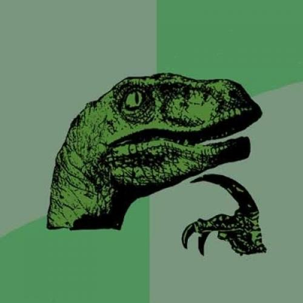

class: middle # Projects in Digital Composition: # Communicating with Data <hr> ### Introducing CSS <hr> Matthew J. Lavin Clinical Assistant Professor of English and Director of Digital Media Lab University of Pittsburgh Spring 2019 --- class: middle # Topics to Cover <hr> #### 1. What is CSS? #### 2. CSS Syntax #### 3. CSS Selectors #### 4. Commonly Used Style Rules --- class: middle # What is CSS? <hr>  <hr> ### Cascading Style Sheets (CSS) is a style sheet language used for describing the presentation of a document. Stylesheets separate presentation/display and from content, which makes your HTML file easier to read, among other things. --- class: middle # CSS Syntax <hr> ### CSS rules look like this: ```p { color: blue; }``` ### Multiple rules are separated by semicolons like ```div { color: white; background-color: blue; height: 50px; width: 100px; }``` ### Try it on https://jsfiddle.net/ --- class: middle <hr> # CSS can be found in several places - ### CSS external eile - ### CSS in a ```<style></style>``` tag - ### CSS as the value of a ```style=``` attribute See https://www.w3schools.com/css/css_howto.asp --- class: middle # CSS Selectors <hr> - #### CSS rules apply to any 'selected' element - #### ```p { color: blue; }``` would apply to all paragraphs - #### selecting by class uses a period ```.first { color: blue; }``` - #### selecting by id uses a # sign ```#author { color: blue; }``` - #### You can combine selectors (more on this later) --- class: middle # Commonly Used Style Rules <hr> - ### Text Attributes - ### Shapes and Sizes, Layout - ### Background Colors and Images - ### What to Do with Different Screen Sizes - ### See https://www.w3schools.com/css/default.asp